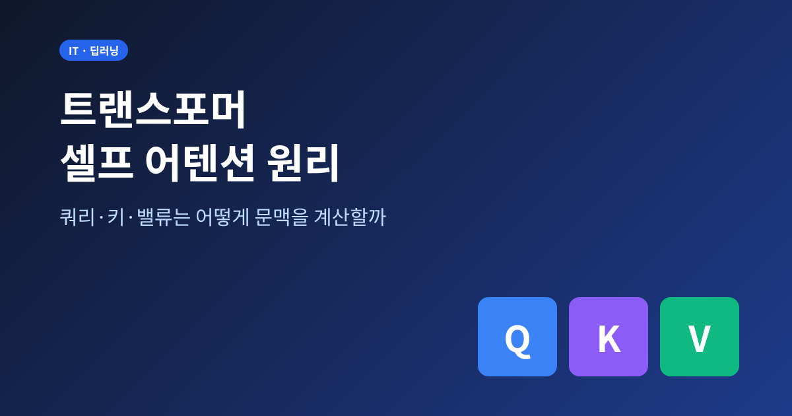
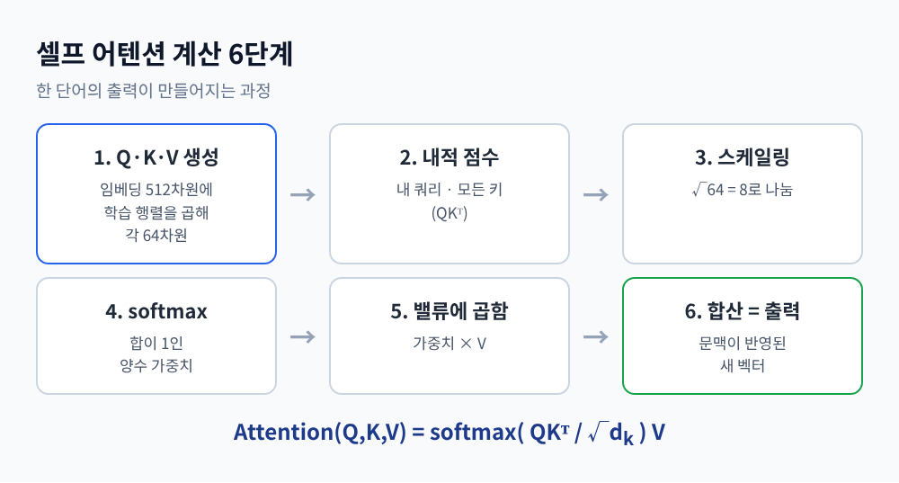
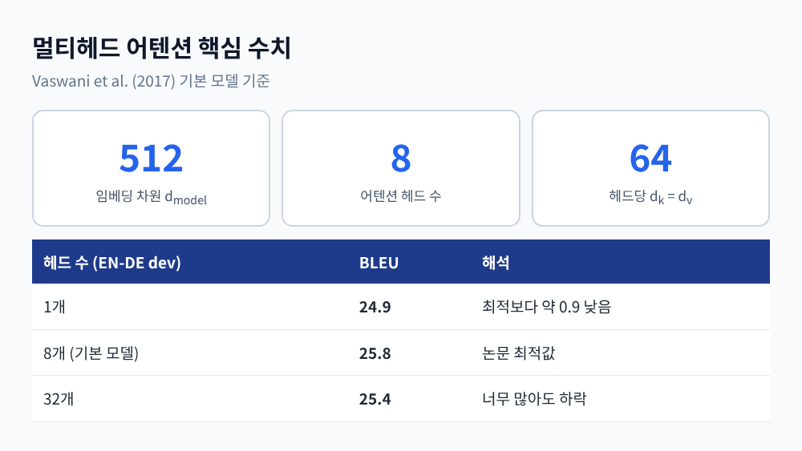
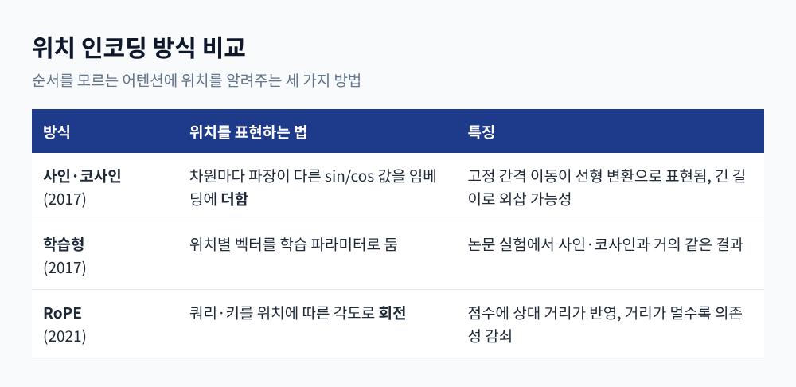
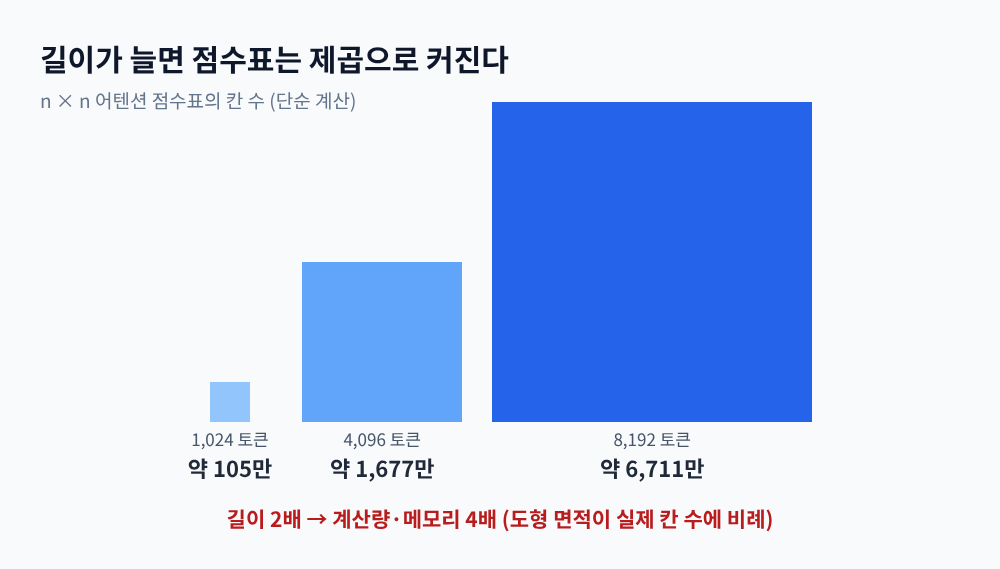

세 줄 요약
이번 글에서는 트랜스포머의 심장인 셀프 어텐션을 정리해 보려 합니다. 쿼리·키·밸류가 무엇인지, 어떻게 문맥을 계산하는지, 그리고 왜 O(n²) 한계가 문제가 되는지까지 순서대로 다룹니다.
"그 동물은 길을 건너지 않았다. 너무 지쳐 있었기 때문이다." 이 문장에서 '그것'이 무엇을 가리키는지는 사람에게 쉽습니다. 기계에게는 그렇지 않습니다.
예전의 순환 신경망(RNN)은 단어를 하나씩 순서대로 읽으며 기억을 넘겼습니다. 멀리 떨어진 단어일수록 정보가 희미해졌고, 앞 단계가 끝나야 다음 단계를 계산할 수 있었습니다.
2017년 논문 "Attention Is All You Need"는 방향을 바꿨습니다. 모든 단어가 다른 모든 단어를 한 번에 직접 바라보게 한 것입니다. 논문 Table 1에 따르면 셀프 어텐션 층은 순차 연산이 O(1)이고, 임의의 두 위치 사이 최대 경로 길이도 O(1)입니다. 순환층은 둘 다 O(n)입니다. 멀리 있는 단어와의 관계를 배우기가 그만큼 쉬워집니다.
각 단어의 임베딩에 학습되는 행렬 세 개를 곱하면 쿼리(Query), 키(Key), 밸류(Value) 벡터가 나옵니다. 원 논문 기본 모델에서 임베딩은 512차원이고, Q·K·V는 각각 64차원입니다.
도서관에 비유하면 이렇습니다. 쿼리는 "내가 찾는 것", 키는 "각 책의 색인 라벨", 밸류는 "책의 실제 내용"입니다. 쿼리와 라벨이 잘 맞는 책일수록 내용을 더 많이 가져옵니다.

계산은 여섯 단계입니다. Jay Alammar의 해설을 기준으로 정리하면 다음과 같습니다.
행렬로 쓰면 softmax(QKᵀ/√d_k)V 한 줄입니다. 결과적으로 '그것'이라는 단어의 출력은 '동물'의 밸류를 크게 섞은 벡터가 됩니다. 문맥이 계산된다는 말은 곧 이 가중 평균을 뜻합니다.
이 나눗셈은 사소해 보이지만 학습 안정성을 좌우합니다. 논문 각주에 근거가 있습니다. 쿼리와 키의 성분이 평균 0, 분산 1로 독립이라면, 내적의 평균은 0이고 분산은 d_k입니다.
차원이 커질수록 내적 값의 폭이 커집니다. 값이 크면 softmax가 한 칸에만 거의 1을 몰아주고, 그 영역에서는 기울기가 매우 작아 학습이 멈춥니다. √d_k로 나누면 분산이 다시 1 근처로 돌아옵니다.
Alammar의 글은 이를 "더 안정적인 그래디언트"를 위한 단계라고 설명합니다. 참고로 나누는 값은 8입니다. 64의 제곱근이지, 8의 제곱근이 아닙니다.
기본 모델은 헤드를 8개 둡니다. 헤드마다 Q·K·V 가중치가 따로 있고, 무작위로 초기화되어 각자 다르게 학습됩니다. 8개의 출력을 이어 붙인 뒤 출력 행렬 W^O를 곱해 하나로 합칩니다. 헤드당 차원이 64이므로 8 × 64 = 512, 전체 연산량은 헤드 하나를 512차원으로 돌릴 때와 비슷합니다.
효과는 실험으로 확인됩니다. 논문 Table 3에서 헤드 1개는 24.9 BLEU로, 최적 설정 25.8보다 약 0.9 낮았습니다. 반대로 헤드를 32개까지 늘리면 25.4로 오히려 떨어졌습니다. 많을수록 좋은 것은 아닙니다.
헤드들이 실제로 다른 일을 한다는 관찰도 있습니다. 원 논문은 5층의 일부 헤드가 대용어 해소에서 'its'에 매우 날카롭게 주목한다고 밝혔습니다. BERT를 분석한 Clark 등의 연구에서는 동사와 직접목적어, 명사와 한정사, 상호참조를 높은 정확도로 잇는 헤드가 발견됐습니다. 구분 토큰에만 붙어 있는 헤드나 같은 층에서 비슷하게 움직이는 헤드도 많았습니다. 모든 헤드가 유용한 것은 아닌 셈입니다.

셀프 어텐션에는 맹점이 있습니다. 모든 단어를 동시에 보기 때문에, 단어 순서를 바꿔도 내적 계산 자체는 달라지지 않습니다. 그래서 임베딩에 위치 벡터를 더해 줍니다.
원 논문은 사인·코사인을 씁니다. 짝수 차원에는 sin(pos / 10000^(2i/d_model)), 홀수 차원에는 같은 꼴의 cos를 넣습니다. 차원마다 파장이 달라 시계의 시침·분침처럼 위치를 구분합니다. 고정된 간격 k만큼 떨어진 위치의 값이 선형 변환으로 표현되므로, 상대적 거리를 배우기 쉬울 것이라 저자들은 가정했습니다. 다만 학습형 위치 임베딩도 거의 같은 결과였다고 합니다.
그 뒤로 방식은 진화했습니다. 2021년 RoFormer의 회전 위치 임베딩(RoPE)은 위치를 회전 행렬로 표현합니다. 그 결과 어텐션 점수에 토큰 사이의 상대 거리가 자연스럽게 반영되고, 거리가 멀수록 의존성이 감쇠합니다. 길이에 덜 묶인다는 점도 장점으로 꼽힙니다.

모든 단어가 모든 단어를 본다는 것은 n × n 크기의 점수표를 만든다는 뜻입니다. 논문 Table 1에서 셀프 어텐션의 층당 복잡도는 O(n²·d)입니다. n이 d보다 작은 문장 수준에서는 순환층보다 빠르지만, 문서 단위로 길어지면 이야기가 달라집니다.
직접 계산해 보면 감이 옵니다. 길이 4,096이면 점수표 칸이 약 1,677만 개이고, 8,192로 두 배가 되면 약 6,711만 개로 네 배입니다. 시간과 메모리가 함께 불어납니다.

해법은 크게 두 갈래로 나뉩니다.
첫째는 계산 대상을 줄이는 근사입니다. Longformer는 슬라이딩 윈도와 소수의 전역 토큰을 섞어 비용을 O(n × w)로 낮췄고, 4,096 토큰까지 다룹니다. Linformer는 어텐션 행렬이 저랭크로 근사된다는 점을 이용해 O(n)에 도달했다고 보고합니다. Reformer는 해싱으로 O(L log L)까지 줄였습니다. 다만 FlashAttention 논문은 기존 근사 기법이 품질을 희생하거나 실제 실행 시간 이득이 없는 경우가 많았다고 지적합니다.
둘째는 계산은 그대로 두고 GPU 메모리 이동을 줄이는 방식입니다. FlashAttention은 정확한 어텐션을 유지한 채 타일링으로 HBM과 SRAM 사이의 읽기·쓰기를 줄였습니다. 논문 기준으로 GPT-2 학습이 3배, BERT-large가 15% 빨라졌습니다. 이론상 복잡도는 같아도 병목이 연산이 아니라 데이터 이동이었다는 사실을 보여준 사례입니다.
정리하면 이렇습니다. 셀프 어텐션은 쿼리와 키로 관계의 세기를 정하고, 밸류를 그 비율로 섞어 문맥을 만듭니다. √d_k 스케일링은 학습을 안정시키고, 멀티헤드는 시선을 나누며, 위치 인코딩은 순서를 돌려줍니다.
이 구조의 장점과 한계는 같은 곳에서 나옵니다. 모두가 모두를 본다는 것, 그래서 강력하고 그래서 비쌉니다.
"모든 것을 보는 대가는 제곱으로 청구된다."
긴 문서를 한 번에 읽는 모델이 늘어난 지금, 이 청구서를 어떻게 줄이느냐가 다음 세대 모델을 가르는 질문이라고 생각합니다. 식 하나(softmax(QKᵀ/√d_k)V)만 정확히 이해해 두신다면, 앞으로 나올 새로운 변형들도 어디를 건드린 것인지 한눈에 보이실 것입니다.